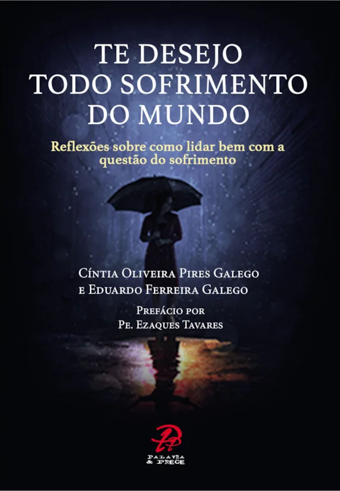

O inverno que fortalece
Como a árvore que aprofunda as raízes no frio, é no sofrimento que construímos nossos alicerces mais sólidos.

Palavra & Prece Editora
Reflexões sobre como lidar bem com a questão do sofrimento
Um livro que começa com um susto e termina com sabedoria. Descubra como transformar os momentos mais difíceis da vida em oportunidades de crescimento, fé e maturidade.
Com prefácio de Pe. Ezaques Tavares
Adquirir o livroVivemos numa sociedade que trata o sofrimento como doença: algo a ser eliminado, esquecido, medicado. Mas e se a dor fosse, na verdade, o maior professor que já tivemos?
Nas palavras dos autores: o sofrimento não bate à porta, ele invade, arromba, sequestra. E é exatamente por isso que precisamos estar preparados para atravessá-lo com lucidez, fé e propósito.
“São nos momentos de mais dificuldades que reconhecemos nossos próprios limites, o verdadeiro valor das coisas e quais pessoas realmente se importam conosco.”
Cíntia e Eduardo Galego
Este livro não promete eliminar o sofrimento. Promete algo mais valioso: ensiná-lo a atravessá-lo sem perder a paz.
Como a árvore que aprofunda as raízes no frio, é no sofrimento que construímos nossos alicerces mais sólidos.
Muitas vezes somos o próprio carrasco da nossa dor. Expectativas irreais criam decepções desnecessárias.
Paz não é ausência de problemas; é sentir no coração que Deus está contigo, independente do momento.
O sofrimento partilhado diminui. Quando ajudamos quem sofre, aliviamos também a nossa própria dor.
Imagine alguém gritando numa festa de Ano Novo: “Desejo a todos ótimos momentos de sofrimento!” A sala inteira se choca. Mas e se aquela pessoa estivesse certa?
Cíntia e Eduardo Galego escreveram este livro ao perceber que pouquíssimas pessoas conseguem enfrentar o sofrimento de forma positiva. Com uma linguagem simples, direta e profunda, os autores conduzem o leitor por reflexões práticas sobre como passar pelos momentos mais difíceis sem desperdiçar as lições que eles carregam.
“Não tenha medo de sofrer, mas sim de permanecer no sofrimento.”
São 10 capítulos curtos e intensos, repletos de histórias do cotidiano, parábolas bíblicas, citações de pensadores e perguntas de autorreflexão que convidam o leitor a se olhar honestamente, e a sair do sofrimento mais forte do que entrou.
Reconheça o mal para vencê-lo e use a crise para aprofundar seus alicerces.
Como expectativas irreais nos tornam os próprios carrascos da nossa dor.
Paz é estar pleno de si, e isso é possível mesmo no coração da tempestade.
Alegria e sofrimento caminham juntos. Eliminar um é eliminar o outro.
O presente é o único tempo que temos. A preocupação nos rouba o agora.
Reclamar não resolve: apenas adia. Assuma a responsabilidade pela mudança.
Pessoas maduras não esperam o outro mudar. Elas tomam as rédeas da própria vida.
Ignorar um problema é uma escolha, e toda escolha tem consequências.
A felicidade não está no destino, mas em cada passo da jornada.
O sofrimento partilhado diminui. A companhia na dor é um dom divino.
Um livro pequeno em tamanho, imenso em profundidade. Leia com calma, medite cada capítulo e permita-se ser incluído em cada tema proposto.
Comprar na Livraria Loyola Disponível também em outras livrarias católicas